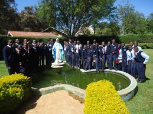

I started my early childhood eduction at Tebes Academy in the year 2005.Few years later i moved to kalya Academey.I studied there for 7 yars and managed to do my kcse examintions in the year 2015.Therafter,I joined Mother Of Apostels Semeniary.
Thats where i built my intrest in computer .I stuudied computer and got an A in my KCSE examinations at the end of the four years.Thereafter i joined Moringa school where i studied softare development.Thats where i currently am. 